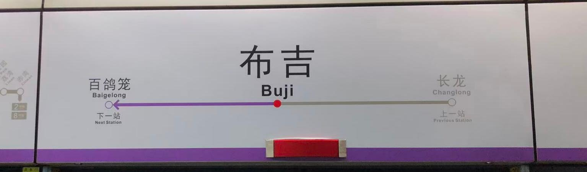
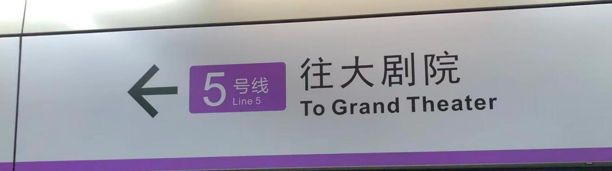
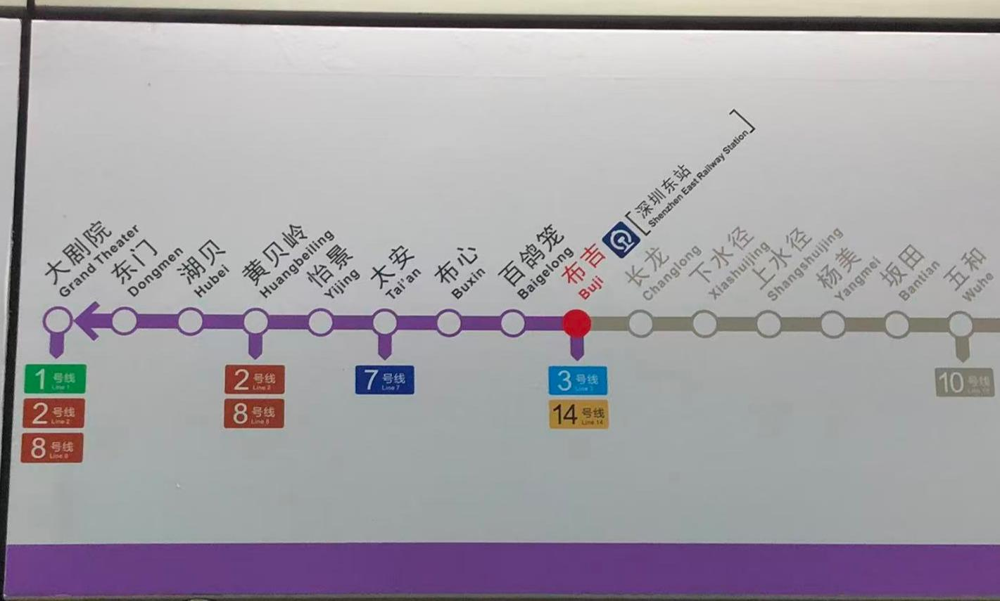
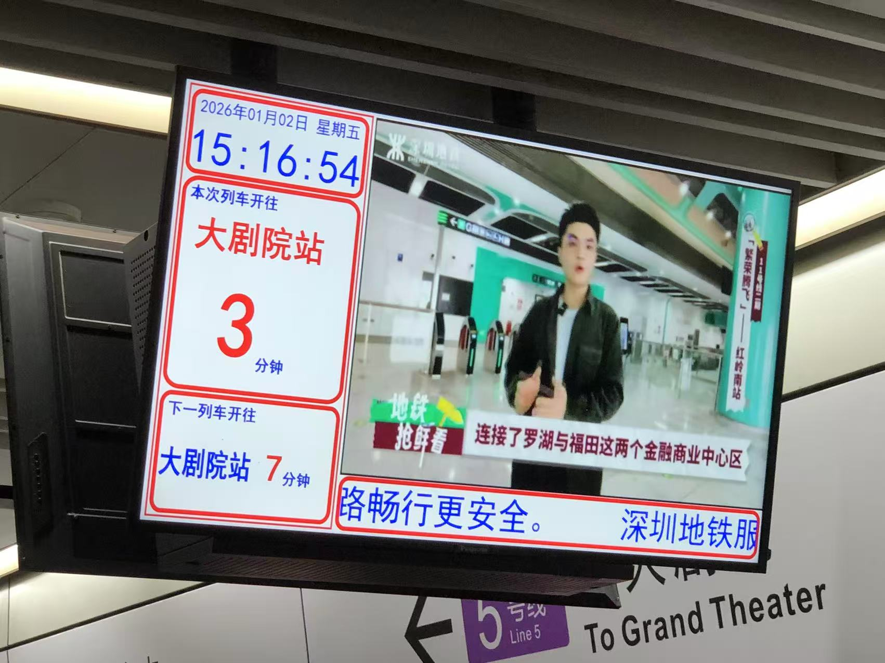
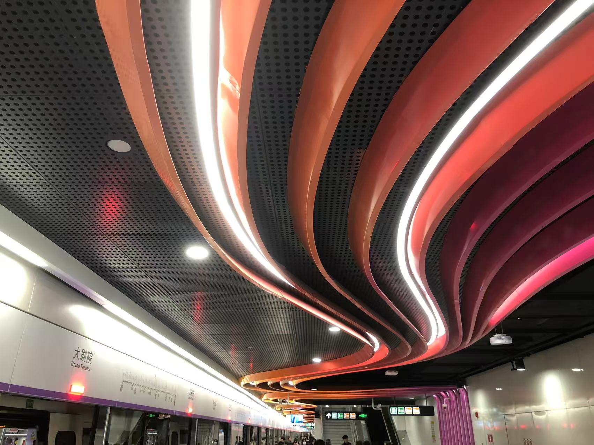
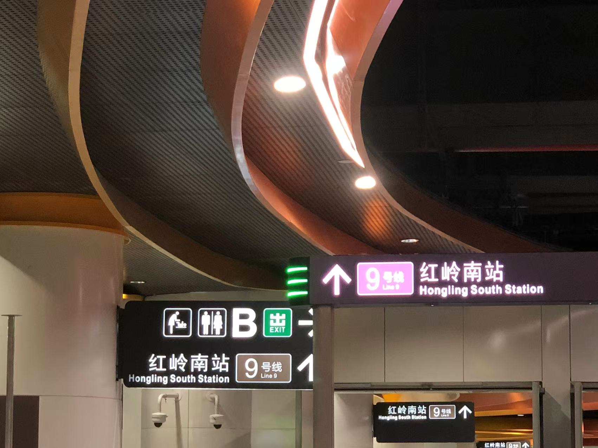
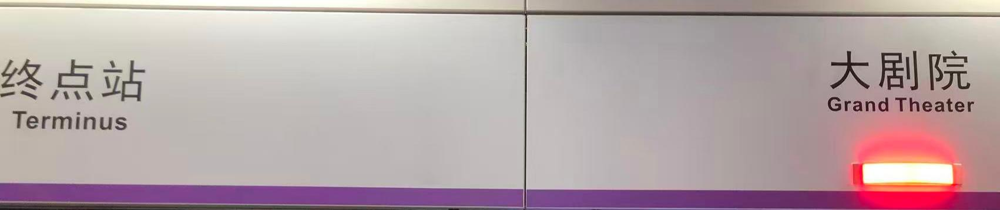
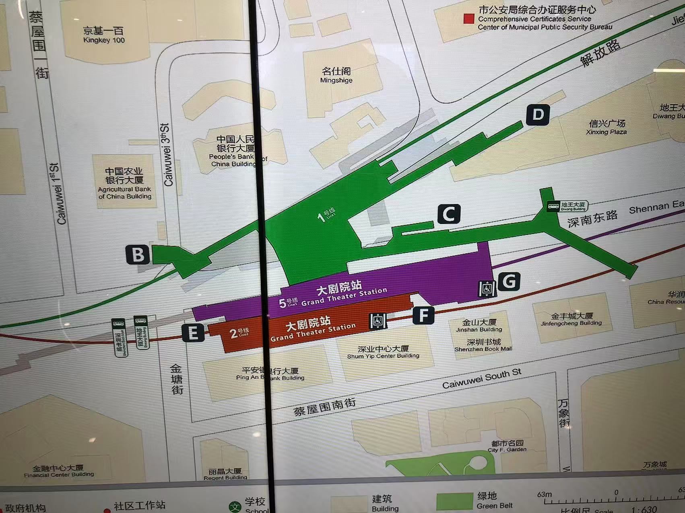
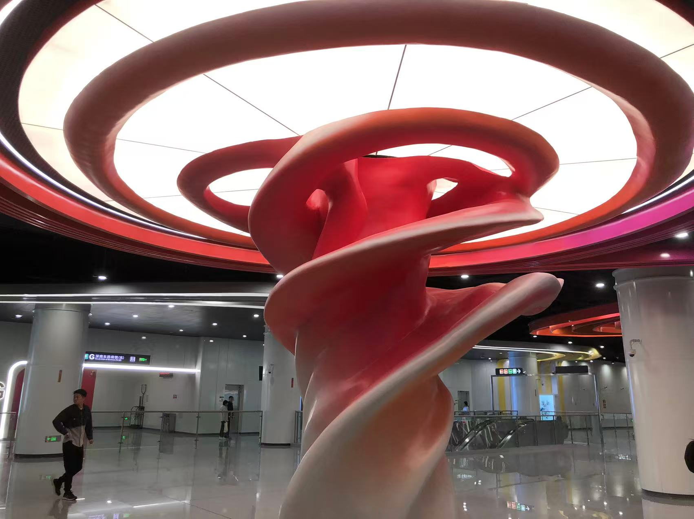
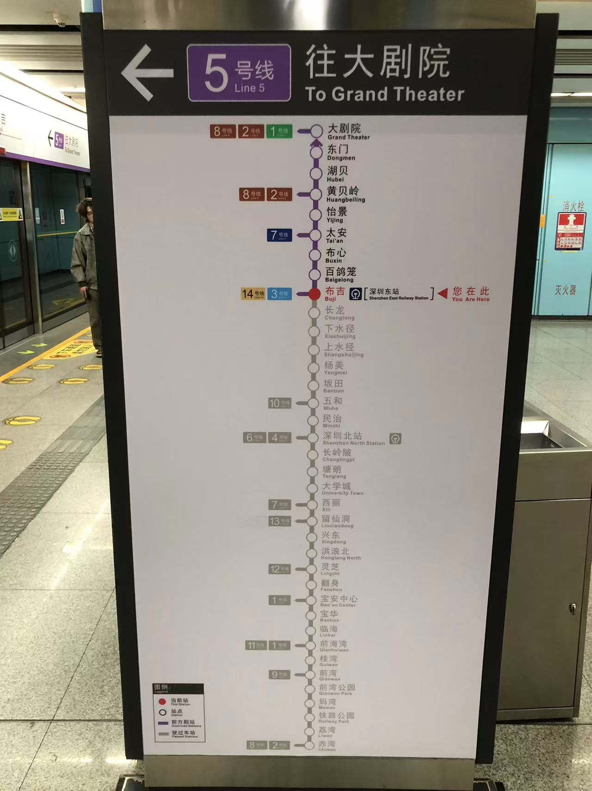

上一站，我定格了远郊梨园站——那座安静伫立的"最后高架站"。这一次，我一头扎进城市的喧嚣几何中心，落脚于5号线西延段的崭新终点，也是1、2号线交织而成的超级枢纽：大剧院站。
梨园站的关键词，是"未来"与"延伸"的想象；而大剧院站的注脚，写满了"连接"与"层叠"的现实。我的探访，就从那段声名在外的"换乘"开始。
和梨园站的静态气质不同，大剧院站鲜活而充满体感：它最鲜亮的新身份，是深圳地铁5号线西延段的终点站；但更重要的是，它早已是1、2号线加持的三线换乘站。
"大剧院"三个字，被物理空间悄然分割。最特别的体验，莫过于5号线与9号线红岭南站之间那段约500米的漫长换乘通道，还是出站换乘，不连续计费的那种。封闭的通道里步履匆匆，仿佛穿越的不是空间距离，而是一段规划的交错。而站内1、2号线与5号线的换乘，却是迅速且高效。这种"极近"与"极远"的出现，恰是深圳地铁网络复杂性的体现。










站名早已指明它的定位，它直接服务于深圳大剧院、万象城、深圳书城这些核心文化地标。这让车站的客流格外丰富：通勤的行色匆匆，观演的盛装赴约，购物的满载而归，阅读的步履悠然，所有人在此交汇，又奔赴各自的目的地。
梨园站的"阳光+低碳"主题清晰直白，大剧院站的设计却更像一份多重需求下的综合答卷。
站厅层里，错综复杂的换乘通道与指示牌，首要使命就是吞吐川流不息的人潮。5号线区域的标识簇新、通道宽敞，与1、2号线带着岁月痕迹的风格形成鲜明对照，仿佛能看见不同时期的地铁建设标准，在此无声对话。
或许是地处城市核心，车站内部的设计并未刻意渲染"大剧院"的艺术主题，整体风格克制而功能至上。站厅中央的灵芝，展现着深圳对艺术的独特思考。
作为西延段的终点，这里也是工程意义上的"生长接缝"。只要细心观察，某些转角、接口处，还能寻见新旧结构衔接的痕迹，那是城市轨道网络生长的年轮，默默记录着时光的更迭。
这里无疑是交通的中心。但在此换乘的人们，目的地却天南地北：有人奔赴CBD的格子间，有人赶赴音乐厅的浪漫约会，有人只是短暂路过，转身奔赴下一站。这座枢纽从不生产内容，它只是沉默而高效地，搬运着整座城市的欲望与期待。
有意思的是，它以文化地标命名，自身却被交通功能填得满满当当。曾经作为城市文化灯塔的"大剧院"，在如今的地铁叙事里，渐渐变成了一个最醒目，也最容易被行色匆匆的脚步略过的出口代号。
写在最后
探站系列EP02，记录的不是一座车站的落成，而是一片都市心脏地带，永不停歇的搏动。